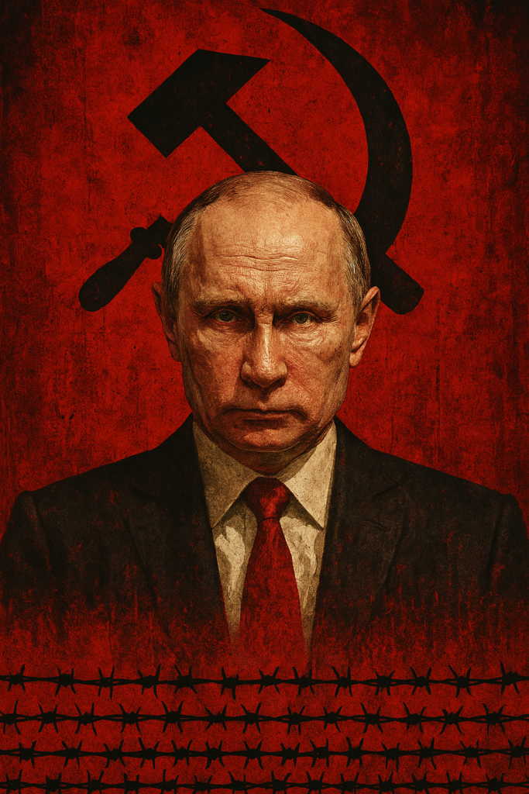

Vladimir Putin e a Ditadura do Medo: Crimes Inqualificáveis e a Erosão da Liberdade na Rússia
Publicado em 2025-03-27 23:17:20

A Rússia de Vladimir Putin é um regime construído sobre dois pilares perversos: o medo sistemático e a violência institucionalizada. Desde que assumiu o poder em 2000, Putin consolidou um sistema autoritário que elimina dissidências, reescreve a história e comete crimes de guerra com impunidade. Sua liderança não é apenas autocrática — é uma máquina de repressão que ecoa os piores capítulos do estalinismo, enquanto desafia a ordem internacional com agressões brutais, como a invasão da Ucrânia em 2022.
Este artigo examina como Putin governa através do terror, os crimes atribuídos ao seu regime e as consequências de sua ditadura para a Rússia e o mundo.
1. A Ditadura do Medo: Silenciando uma Nação
Putin não governa apenas com leis — governa com o terror psicológico. A repressão na Rússia atual assemelha-se aos métodos da KGB, onde qualquer voz dissonante é esmagada:
Perseguição a opositores: Alexei Navalny, o principal crítico de Putin, foi envenenado em 2020 e, após sobreviver, preso ao voltar à Rússia. Morreu em 2024 em uma colónia penal na Sibéria, em condições que relembram os gulags estalinistas .
Leis draconianas: Qualquer russo que critique a guerra na Ucrânia pode ser condenado a até 15 anos de prisão por "desinformação". Professores, jornalistas e até civis são presos por simplesmente expressarem opiniões .
Medo generalizado: Cidadãos como Maria, uma professora de Moscovo, vivem em autocensura permanente, temendo que até conversas privadas sejam denunciadas. "Tremo quando o telefone toca", confessou ela, comparando o clima atual ao Terror Vermelho de Estaline.
O resultado é uma sociedade paralisada, onde o medo sufoca a liberdade e a resistência.
2. Crimes de Guerra e a Brutalidade na Ucrânia
A invasão da Ucrânia em 2022 expôs a natureza criminosa do regime de Putin. O Tribunal Penal Internacional (TPI) emitiu um mandado de prisão contra ele por crimes de guerra, incluindo:
Deportação de crianças ucranianas: Mais de 16.000 crianças foram levadas à força para a Rússia, um ato classificado como genocídio cultural .
Massacres de civis: Em Bucha, Mariupol e outras cidades, tropas russas executaram civis, deixando corpos nas ruas com sinais de tortura. Hospitais e teatros foram bombardeados, mesmo com avisos claros de que abrigavam crianças .
Uso de armas proibidas: Bombas de fragmentação e explosivos termobáricos foram usados em áreas residenciais, violando as Convenções de Genebra .
Apesar das provas, Putin opera com impunidade, protegido pelo veto russo no Conselho de Segurança da ONU .
3. A Manipulação da História e o Culto ao Líder
Putin não só controla o presente — reescreve o passado para justificar seu poder:
Nostalgia soviética: Ele retrata o colapso da URSS como uma "tragédia" e glorifica figuras como Stalin, enquanto suprime memórias dos gulags .
Nacionalismo extremo: Seu discurso de "Grande Rússia" alimenta o orgulho patriótico, enquanto culpa o Ocidente por todos os males do país .
Culto à personalidade: Imagens de Putin praticando desportos radicais ou liderando exércitos, são amplamente divulgadas, criando a ilusão de um "macho alfa" indispensável .
Essa narrativa distorce a realidade e mantém milhões de russos submissos, temendo que sem Putin, a Rússia "desmorone" .
4. O Desafio Internacional: Justiça ou Impunidade?
A comunidade global enfrenta um dilema: como responsabilizar um ditador que ignora as leis internacionais?
O TPI emitiu um mandado, mas a Rússia não reconhece sua autoridade. Putin só será julgado se viajar a um país que coopere com o tribunal .
A ONU está paralisada pelo veto russo, enquanto a China e outros regimes autoritários protegem Moscovo.
Tribunais alternativos, como os criados para a ex-jugoslávia e Ruanda, são uma possibilidade, mas exigem vontade política que ainda falta .
Enquanto isso, a Ucrânia sofre, e o mundo assiste à normalização da barbárie.
Conclusão: Até Quando?
Putin não é um líder controverso — é um criminoso de guerra que governa pelo medo. Sua ditadura já custou milhares de vidas, destruiu a democracia russa e ameaça a segurança global.
A pergunta que resta não é se ele será responsabilizado, mas quando. Enquanto o mundo hesita, a mensagem para outros tiranos é clara: a brutalidade compensa.
Como alertou Oleksandra Matviichuk, Nobel da Paz:
"Putin não tem medo da NATO. Tem medo da liberdade. E se não o detivermos, o autoritarismo vencerá."
A História julgará não apenas Putin, mas todos os que o permitiram.
E lá no fundo a esperança de “I hope the Russians love their children too…” - Sting